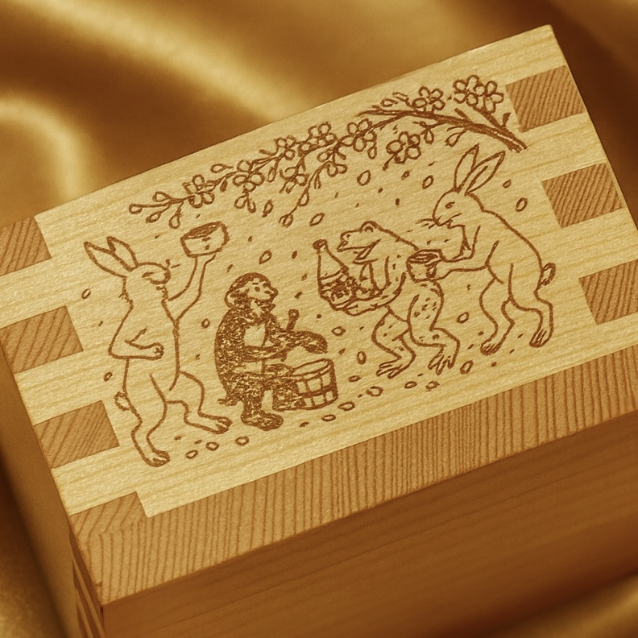

01 — Masu pour entreprises
Masu gravés, cadeaux et objets d’entreprise
Cadeaux d’anniversaire, objets promotionnels d’entreprise, cadeaux de mariage, célébrations d’inauguration et verres pour le service en restaurant. Nous gravons votre nom ou votre logo dans des masu en cyprès hinoki japonais et définissons les caractéristiques selon l’usage prévu. À partir d’une pièce, dix pour les entreprises. Avant toute commande, nous vous envoyons gratuitement un devis et un aperçu de la gravure finale.
- Cadeaux d’anniversaire
- Objets à votre logo
- Cadeaux de mariage
- Usage en restaurant
- Cadeaux pour l’étranger
